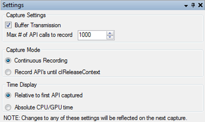

Settings
Modifies settings for capturing. Note that changes will take effect on the next capture and not on the current one if any.
Screenshot

Components
- Enable buffer and image transmission
- Capturing will automatically stop if the number of API calls received exceeds this number
- Specify if we want profiler to stop capturing after receiving a clReleaseContext
- Define if timing information should be saved relative to first API call recorded or absolute CPU clock